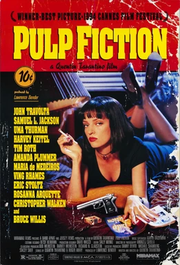
Pulp FictionPulp FictionMy masterpieceIl mio capolavoro
Pulp FictionPulp Fiction
Quentin Tarantino · 1994
IMDbStories, characters and worlds that have inspired me.Storie, personaggi e mondi che mi hanno ispirato.

Pulp FictionPulp FictionQuentin Tarantino · 1994
IMDb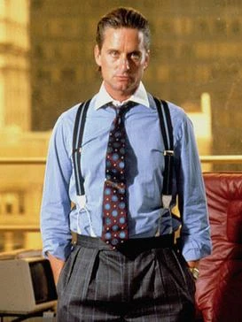
Gordon GekkoGordon GekkoWall Street · 1987
IMDb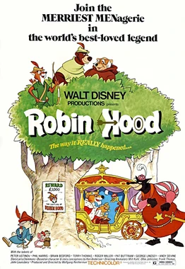
Robin HoodRobin HoodDisney · 1973
IMDb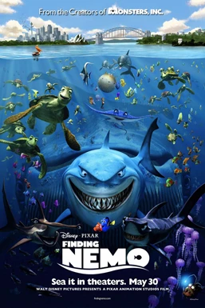
Finding NemoAlla ricerca di NemoPixar · 2003
IMDb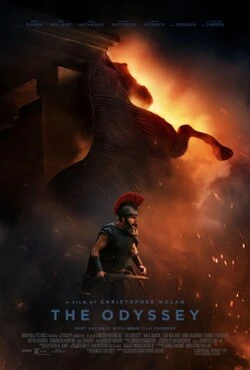
The OdysseyThe OdysseyChristopher Nolan · 2026
5/5
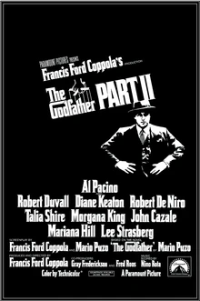
The Godfather Part IIIl Padrino – Parte II1974 · Francis Ford Coppola
IMDb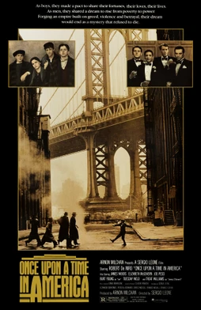
Once Upon a Time in AmericaC’era una volta in America1984 · Sergio Leone
IMDb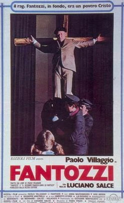
FantozziFantozzi1975 · Luciano Salce
IMDb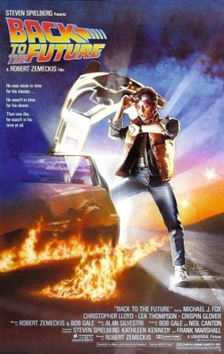
Back to the FutureRitorno al futuro1985 · Robert Zemeckis
IMDb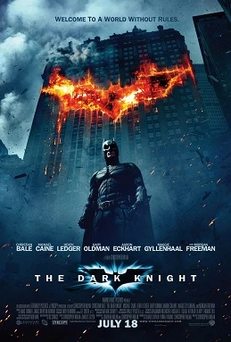
The Dark KnightIl cavaliere oscuro2008 · Christopher Nolan
IMDbDirector · Regista
Director · Regista
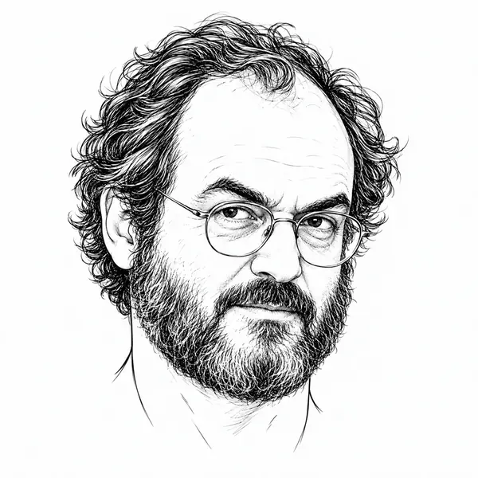
Stanley KubrickStanley KubrickDirector · Regista
Director · Regista
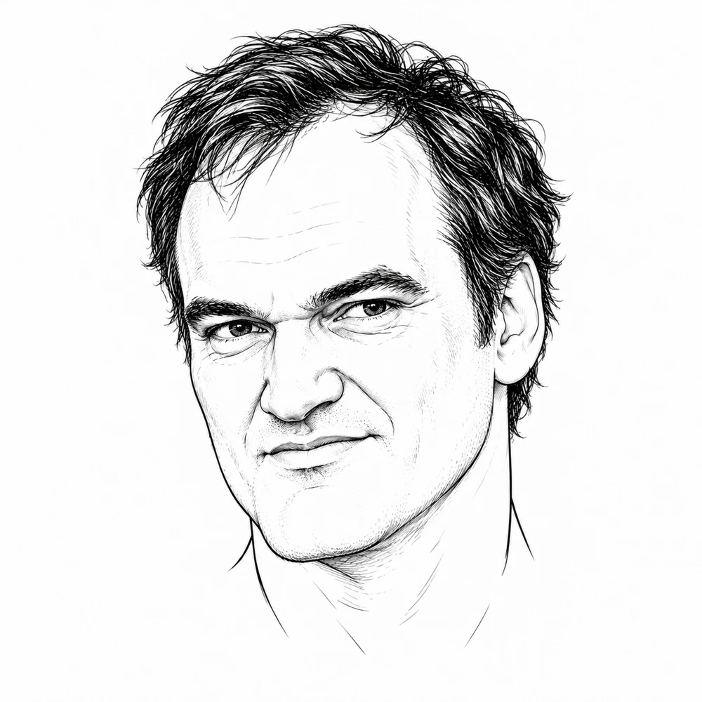
Quentin TarantinoQuentin TarantinoDirector · Regista
Actor · Attore
Actor · Attore
Actor · Attore
Actor · Attore
Actress · Attrice
Actress · Attrice
Actress · Attrice
Actress · Attrice
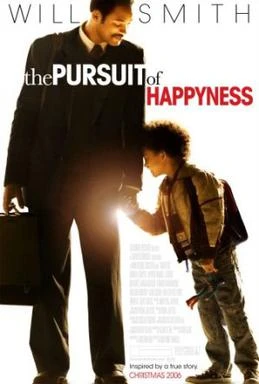
The Pursuit of HappynessLa ricerca della felicitàThe one that moved me.Il film che mi ha commosso.
IMDb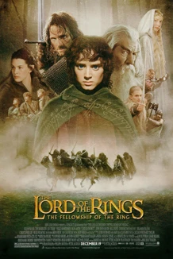
The Lord of the RingsIl Signore degli AnelliA masterpiece, but once was enough.Un capolavoro, ma una volta è bastata.
IMDb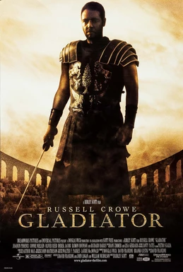
GladiatorIl gladiatoreThe one I wish I'd seen in a cinema.Quello che avrei voluto vedere al cinema.
IMDbMovies that make me laugh.Film che mi fanno ridere.
IMDb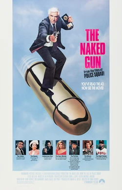
The Naked GunUna pallottola spuntataMovies that make me laugh.Film che mi fanno ridere.
IMDbPulp Fiction · Samuel L. Jackson
IMDbI love the magic of the big screen, but these days most of my movie nights happen at home. Always in the original language, with subtitles.Amo la magia del grande schermo, ma oggi finisco per vedere quasi tutti i film a casa. Sempre in lingua originale, con i sottotitoli.
Director portraits: AI-generated illustrations.Ritratti dei registi: illustrazioni generate con AI.
The adapted photographs retain the license linked below. Diane Keaton, Julia Roberts and Jennifer Lawrence use licensed alternatives to the original selection.Le fotografie modificate mantengono la licenza indicata qui sotto. Per Diane Keaton, Julia Roberts e Jennifer Lawrence sono state usate alternative con licenza alle scelte iniziali.
Copyrighted images; no Creative Commons license is claimed. Images converted to WebP.Immagini protette da copyright; non sono indicate come immagini con licenza Creative Commons. File convertiti in WebP.